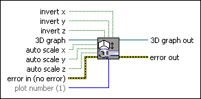
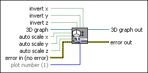

Axes Properties VI
Owning Palette: 3D Graph Properties VIs
Requires: Base Development System (Windows)
Adjusts the properties of the x-, y-, and z-axes, including scaling and inverting.

 Add to the block diagram Add to the block diagram |
 Find on the palette Find on the palette |
Owning Palette: 3D Graph Properties VIs
Requires: Base Development System (Windows)
Adjusts the properties of the x-, y-, and z-axes, including scaling and inverting.

| Add to the block diagram |
Find on the palette |
 |
invert x reverses the plot along the x plane. |
|
invert y reverses the plot along the y plane. |
|
invert z reverses the plot along the z plane. |
 |
3D graph accepts the reference to the 3D control. |
|
auto scale x enables autoscaling for the x plane. |
|
auto scale y enables autoscaling for the y plane. |
|
auto scale z enables autoscaling for the z plane. |
 |
error in describes error conditions that occur before this node runs. This input provides standard error in functionality. |
 |
plot number is the index into the list of plots from the properties of the 3D control. Add new plots by right-clicking the control and adjusting the properties. The default is the first plot from the list. |
 |
3D graph out passes the reference to the 3D control out so that you can use it with other VIs. |
 |
error out contains error information. This output provides standard error out functionality. |